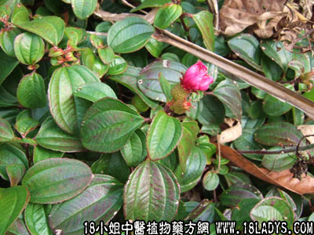

地菍(中草药名称:地菍)(科目:野牡丹科)

别名：挞地菍、连地菍。
植物名：地菍。
生长环境：本品为披散或匍伏亚灌木，生长与旷野地上，山坡和丘陵向阳山见之。
分布：越南和我国南部普遍生长。
入药部分：根部。
采集期：全年有产，秋季为佳。
自采地点：山岗。
性味：性平，性微甘淡。
功能：保产安胎。
主治、用量和用法：①痢疾:干根1至2两清水煎服，②脚部疲软无力：干根2两，鸡脚4对，清水煎服；③胎动不安：干根1两，鸡蛋1只，清水煎服。
附录：（全草）治皮肤生蛇痕痒：干生可用，煎水洗患处。
（方歌）地菍根能治症多，痢疾足痛与安胎，若将全草煲水洗，皮肤生蛇免祸灾。
参考资料：《广州常用草药验方集解》补血安胎经验良方：地菍根、岗菍根各1两至两半，清水煎服，或煲鸡蛋同服。
（方解）孕妇血虚，可致胎不安。宜补母血。人多之知鹿茸、当归等补血，而不知岗菍根、地菍根在民间使用有经验。据临床观察，产前一、二个月，间歇以本方或选用单味常服，确能旺血，而且易产。
岗菍即山菍，其子如深枣红色，味甘可啖。地菍之子细圆，色味与岗菍同，微温补血，并治腰肾虚。
（方歌）补血安胎用地菍，孕期常服顺产占，配入岗菍腰肾固，鸡蛋同煎血白调。